LiveWise — Full-Stack Housing Recommendation App
A course project (CIS 5500) that turns scattered public housing, income, crime, and air-quality data into a single searchable, comparable tool for people deciding where to live.
Housing decisions shouldn't need eight browser tabs.
Choosing where to live means weighing rent, income growth, crime, school quality, and air quality — usually scattered across separate government datasets and real-estate sites. LiveWise pulls state, county, and ZIP-level data into one SQL-backed explorer so a renter or buyer can search, filter, and compare places without stitching sources together themselves.
How it's put together
A React front-end talks to an Express REST API, which queries PostgreSQL on AWS RDS — with materialized views doing the heavy aggregation ahead of time so map and search queries stay fast even across ~26k ZIP codes.
What I built
I designed and built the multi-step questionnaire — income and rent budget, ranked priority factors (education, rent, air quality, crime, insurance coverage, poverty), and preferred states — along with the scoring engine behind it. It surfaces the top five matching counties, each with a match percentage and a breakdown of how they compare to national medians on the factors the user ranked highest.
What the app does
Interactive Map Page
Lets users explore affordability and livability metrics across states, counties, and ZIP codes on a live map. Users can search a location, switch the map metric, apply filters (income, air quality, crime), and drill from a national view down to county and ZIP polygons.
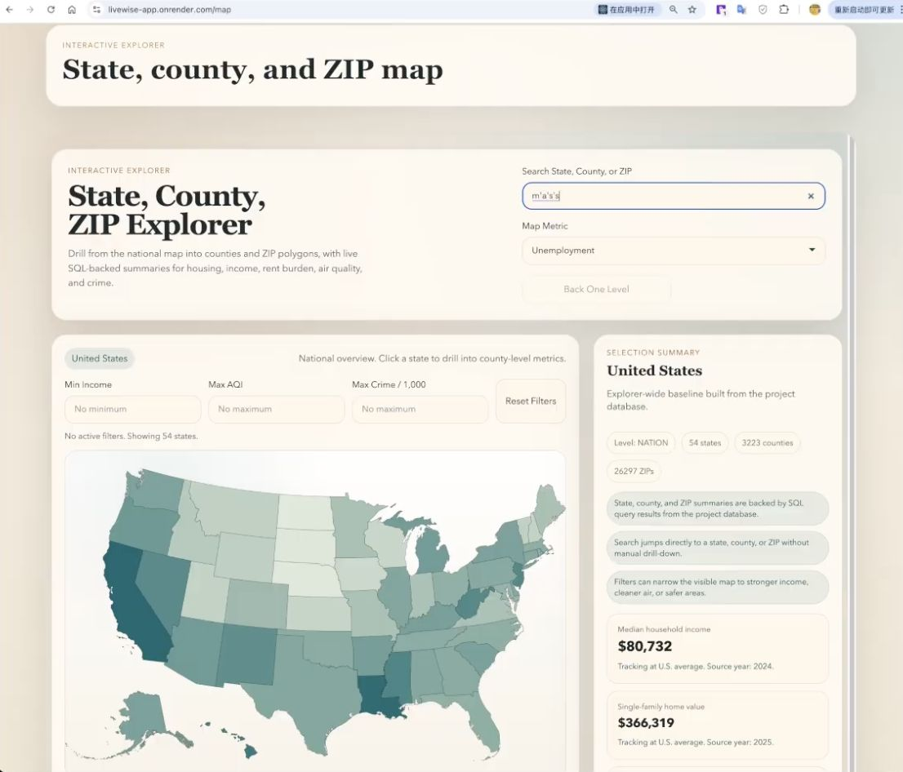
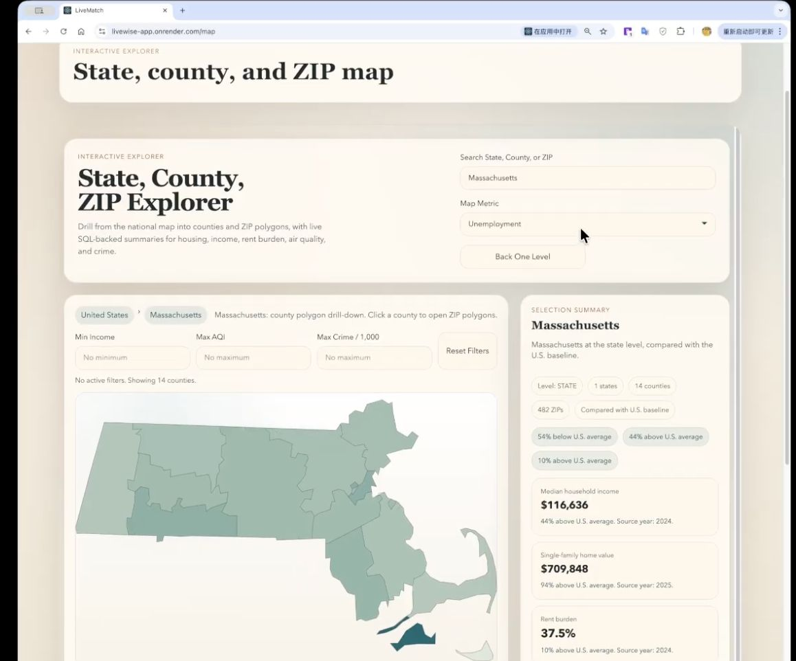
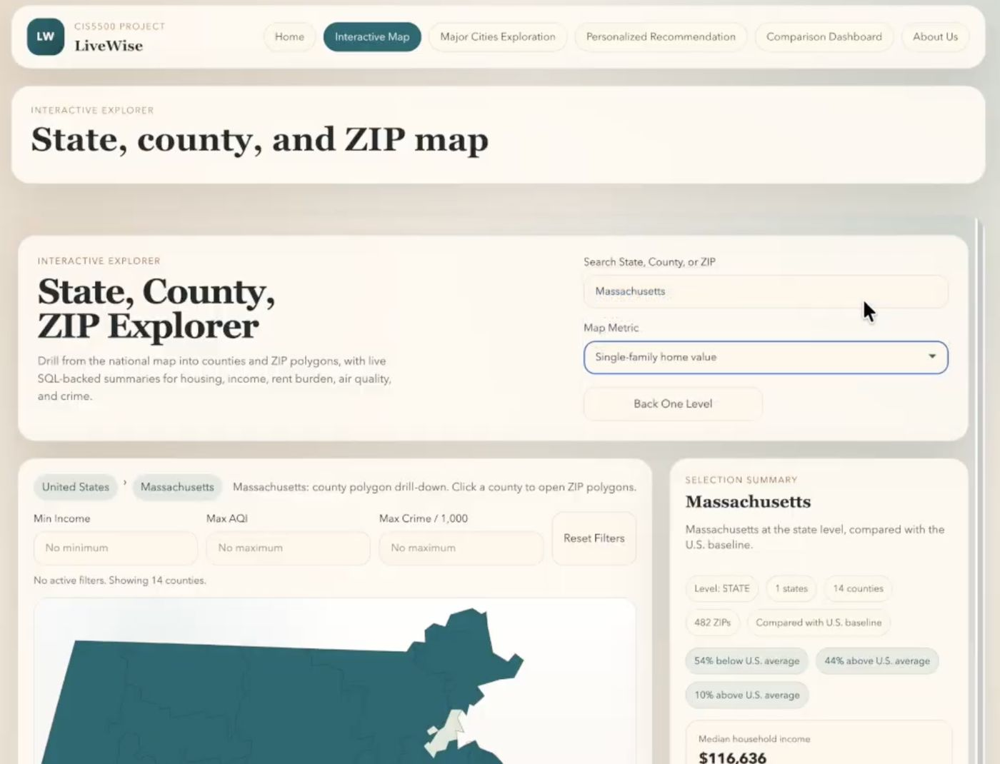
Major Cities Exploration Page
Displays housing price trends and key livability indicators for ten major U.S. cities, so users can quickly compare income, rent burden, education, unemployment, poverty, crime, and air quality side by side.
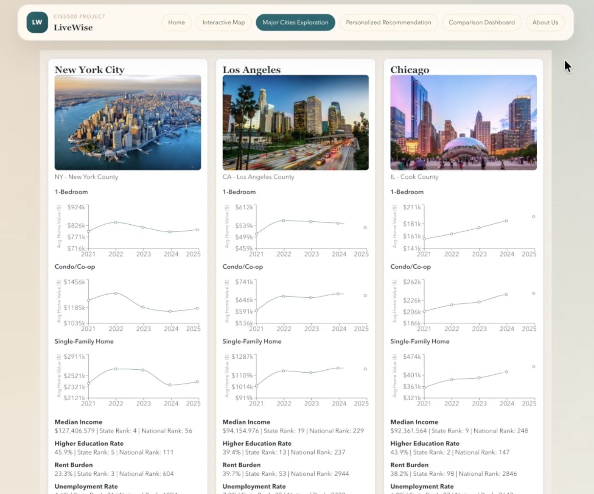
Personalized Recommendation Page — my contribution
A guided flow: pick rent vs. buy, enter income and budget, rank the top three factors that matter most, and choose up to three preferred states. The engine returns the top five matching counties with a match score and per-factor comparisons to the national median.
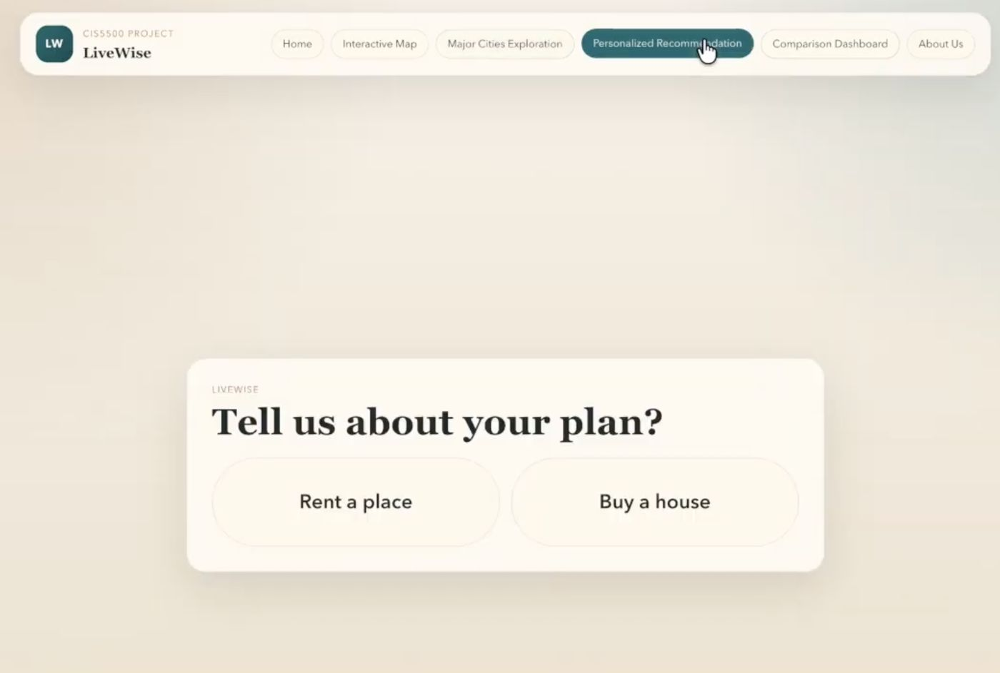
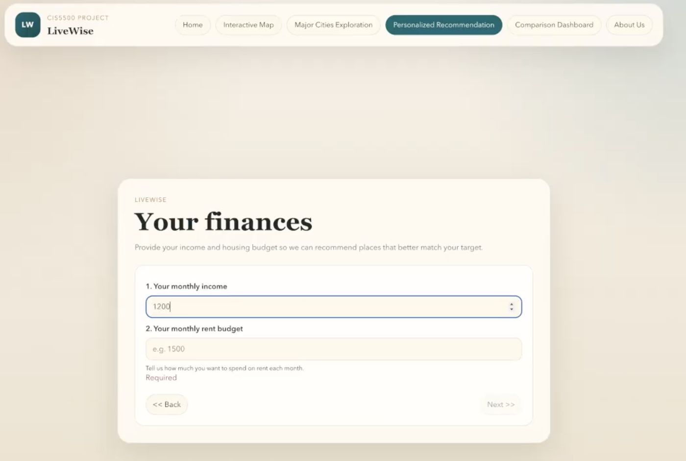
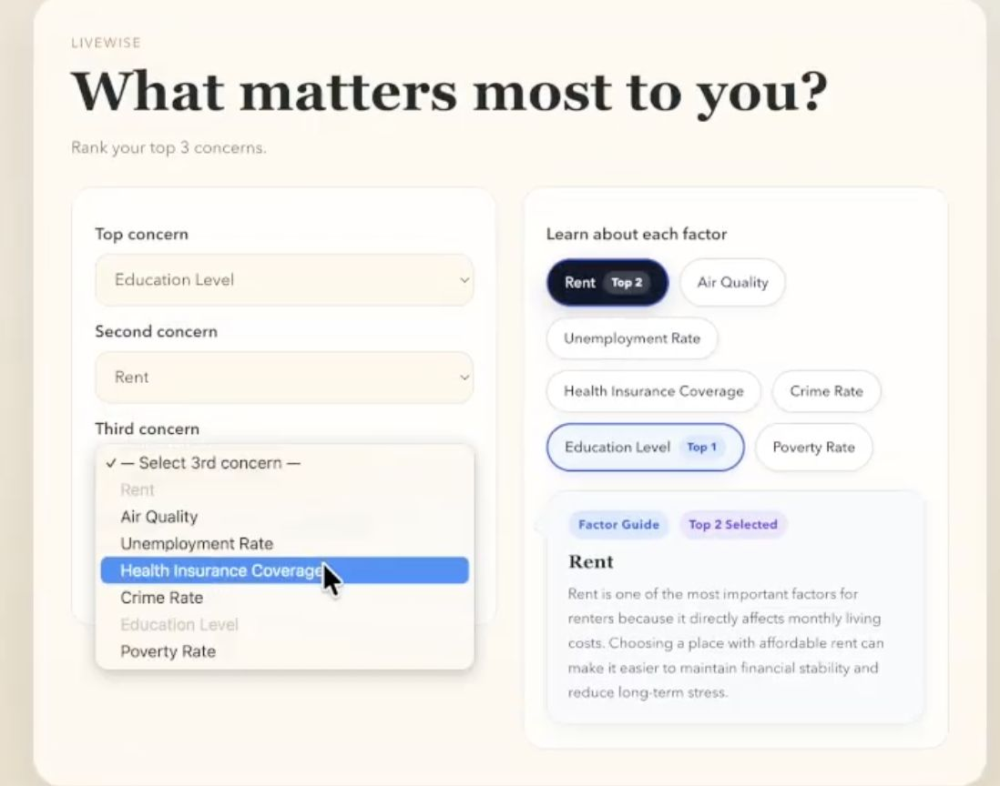
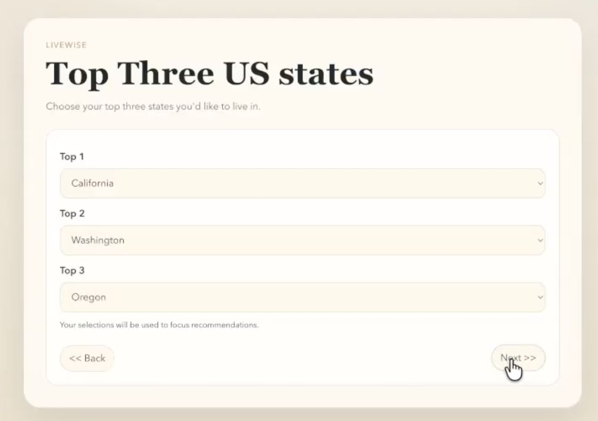
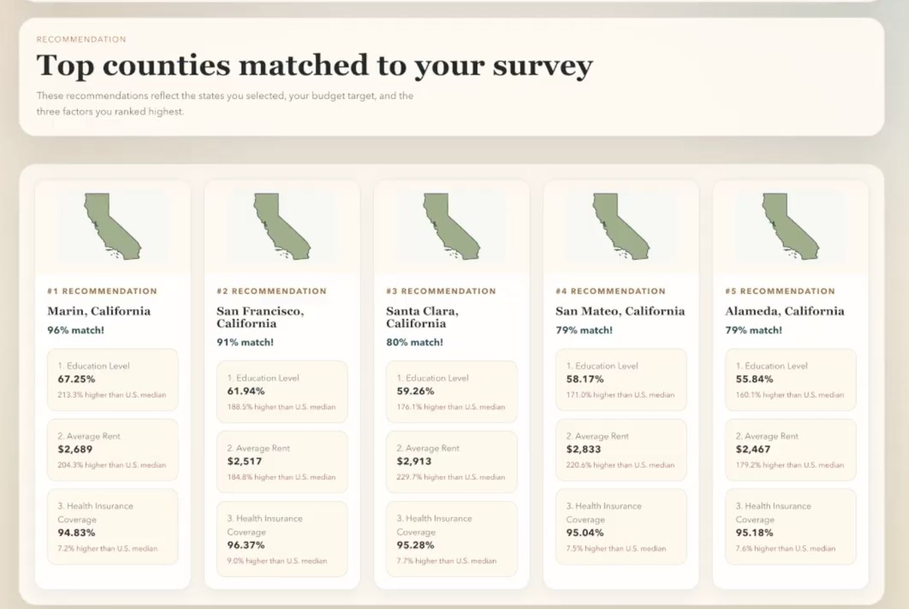
Comparison Dashboard Page
Lets users compare two counties side by side across housing, income, employment, education, insurance, air quality, and crime. Color coding and a summary line show which county leads in each category.
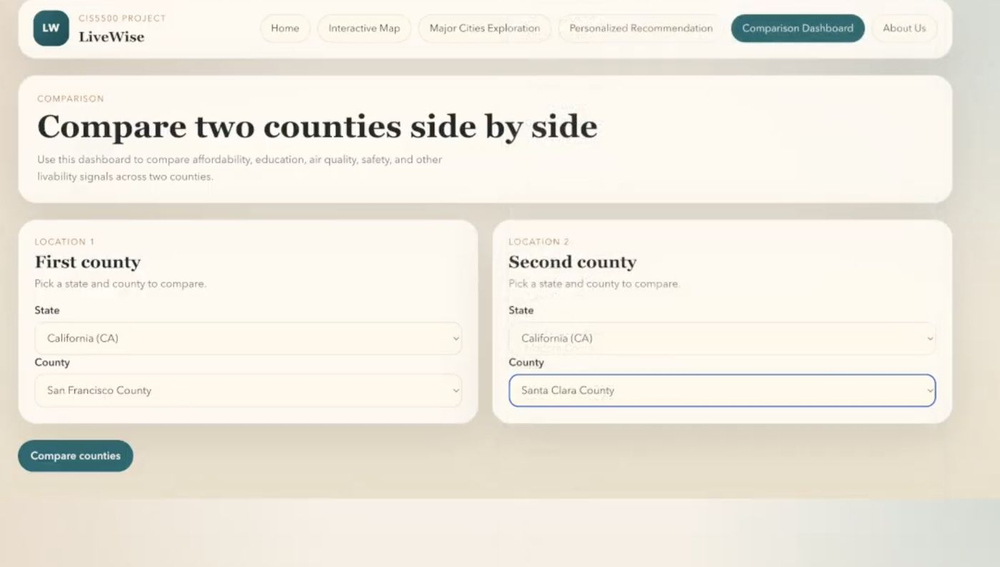
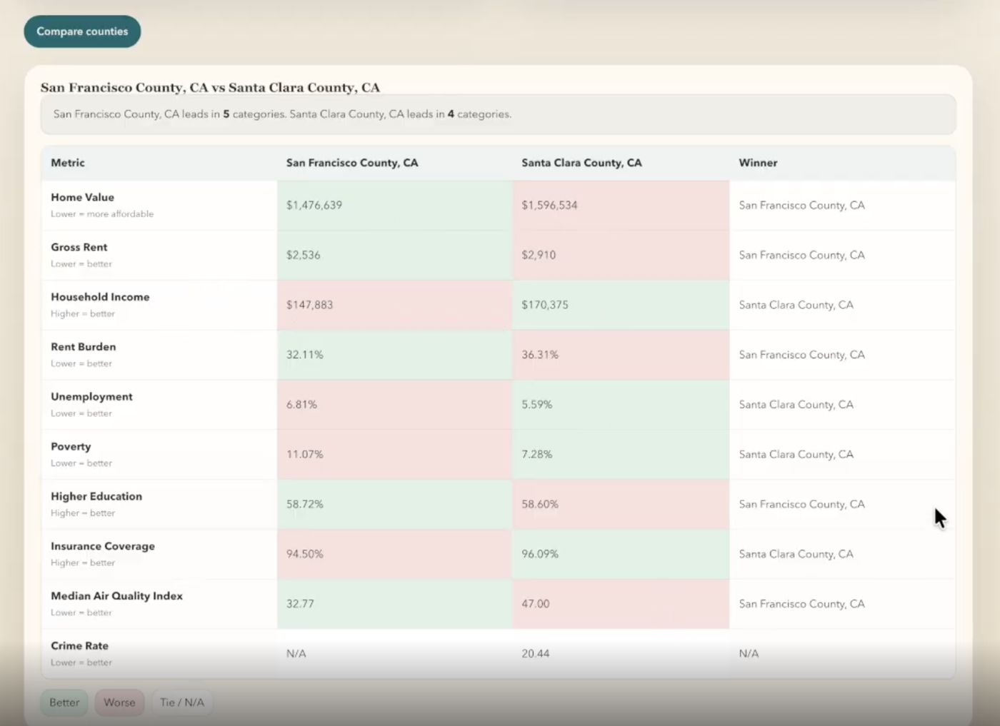
Why it's built this way
Data layer
- Materialized views precompute state/county/ZIP aggregates so map and search queries don't run expensive joins live
- PostgreSQL on AWS RDS for a managed, relational store that fits the multi-table government datasets
- Complex SQL for the recommendation scoring, run server-side rather than in the client
App layer
- React with component-based multi-step forms for the recommendation questionnaire
- Express REST API as a thin, stateless layer between the front-end and the database
- CI/CD pipeline for consistent deploys to Render throughout development
What was hard
Scoring across multiple weighted, user-ranked factors meant designing a formula that stayed intuitive — a "96% match" needs to mean something a non-technical user trusts, not just a number. We handled missing data (some counties have no reported crime rate) by excluding those factors from a county's score rather than penalizing it or faking a value.
Performance was the other trade-off: querying live across ~26,000 ZIP codes on every filter change was too slow, so we moved to materialized views refreshed ahead of time — trading a bit of data freshness for consistently fast page loads.